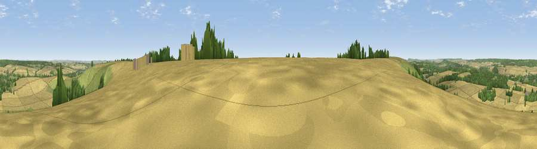

Viewpoint near Burcombe
#21129 in England · top 28% of its area beats it · near BurcombeWhere it is
The exact computed spot (SU 05525 29025). Click the marker for map links.
The view, rendered

A 360° render of this exact spot computed from the terrain model, tree cover and land cover — summer colours, afternoon light, calibrated against photographs of famous viewpoints. Real trees, hedges and buildings will differ in detail.
The panorama
Grey silhouette: terrain skyline in each direction (720 bearings, Earth curvature and refraction included). Dashed green: skyline with trees (+15 m) and buildings (+8 m) as obstacles. Blue strip: how far the ground is visible on each bearing.
Where the view opens
Wedge length = distance to the farthest visible ground on that bearing (vegetation-aware). Rings at 10, 25 and 50 km.
What fills the view
64% cropland · 20% grassland · 16% woodland ·
Angular shares of the visible panorama (visual magnitude), not map area. Landscape diversity 0.40 (0–1 Shannon).
Key numbers
More beautiful places nearby
The staircase of upgrades: each row has a higher view potential than everything closer. Driving times are estimates from straight-line distance, calibrated against real road routing — check an actual route before setting out.
| Place | Direction | Drive | Score |
|---|---|---|---|
| Viewpoint near Burcombe | ENE · 1 km | ~3 min | 56.9 |
| Bishopstone Down | E · 1 km | ~3 min | 57.6 |
| Hydon Hill | W · 1 km | ~4 min | 61.2 |
| Marleycombe Hill | SSW · 7 km | ~15 min | 63.3 |
| Trow Down | SW · 11 km | ~21 min | 67.5 |
| Monk's Down | WSW · 15 km | ~26 min | 74.4 |
| Viewpoint near Berwick St John | WSW · 15 km | ~27 min | 78.2 |
| Viewpoint near Studland | S · 48 km | ~68 min | 80.9 |
51.06054, -1.92254 · source: screening · position refined by local search. Computed location — check access rights before visiting.